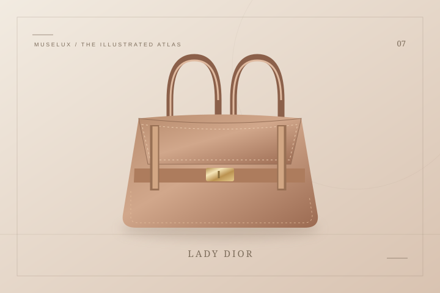

2026 / Most wanted
2026 / Most wantedDior
Small Dior Toujours Hobo Bag — Black Cannage Lambskin
The small Toujours Hobo translates Dior’s geometric Cannage pattern into a rounded silhouette.
US$3,700Explore ↗
Official US retail snapshot · approx. 17 Oct 2026THE HOUSE / 法国 / EST. 1946
迪奥 — 从高定沙龙，走来的建筑感
迪奥让人想到的，往往先是一道腰线，再是一只端正的小手袋。克里斯汀·迪奥在蒙田大道建立时装屋，首场发布所呈现的轮廓，后来被称为 New Look。品牌把服装里的结构与装饰感，继续带进包袋与香水。Lady Dior 的藤格纹、弧形提手和字母吊饰，看似轻巧，却能让人联想到沙龙座椅与建筑的秩序。认识它，可以从正面看轮廓，再从侧面看体积，最后留意不同皮革怎样改变光泽。比起只记住某一季颜色，这些细节更能解释，为什么同一种形状可以有那么多不同表情。
A FEW CHAPTERS IN TIME
克里斯汀·迪奥建立巴黎时装屋
首场高级定制发布获称 New Look
Miss Dior 香水推出
Yves Saint Laurent 接任设计工作
戴安娜王妃获赠后来闻名的手袋
Dior Lady Art 项目开启艺术合作
IN THE MUSELUX CATALOG
5 项收录：3 款 The Style Edit 实物款式、1 条年度精选、1 个经典设计词条。年度卡片保留入选年份和美元价格口径。
2026 / Most wantedThe small Toujours Hobo translates Dior’s geometric Cannage pattern into a rounded silhouette.
 THE STYLE EDIT
THE STYLE EDITThe small Lady Dior uses a compact, upright shape to give soft lambskin an architectural presence.

把沙龙里的藤格，轻轻提在手上。
打开词条 ↗KEEP READING